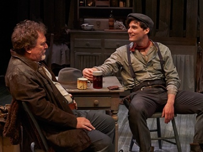
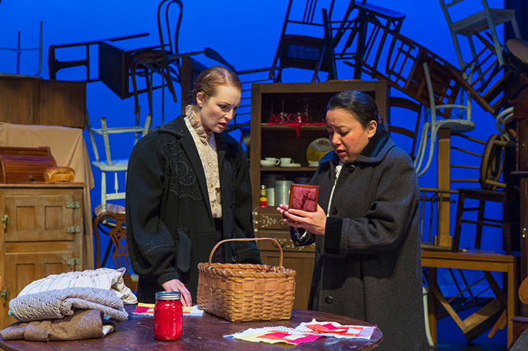

By Susan Glaspell
Summary
"I might have known she needed help! I know how things can be—for
women. I tell you, it's queer, Mrs Peters. We live close together and we live far apart.
We
all go through the same things—it's all just a different kind of the same thing" - Mrs. Hale
Trifles is a one-act play in which two women, Mrs. Hale and Mrs. Peters, accompany their husbands and a county attorney to investigate the suspicious death of John Wright, who was found strangled in his farmhouse. While the men dismiss the women’s observations as insignificant “trifles,” Mrs. Hale and Mrs. Peters uncover subtle but telling signs of Mrs. Wright’s emotional deterioration: her erratic quilting, an empty birdcage with a broken door, and finally a dead canary with its neck wrung. These discoveries reveal a life of profound isolation and implied domestic oppression, as well as suggest Mrs. Wright’s motive in killing her husband. Recognizing both her suffering and the men’s inability to understand it, the women choose to conceal the evidence, forming a quiet but powerful act of solidarity that exposes the gendered blindness of the society around them.

What is the scope of patriarchy and oppresion?
How does if affect the female characters?
In Trifles, the scope of patriarchy and oppression is broad and deeply embedded in the social and legal structures surrounding the characters. George Henderson, Henry Peters, and Lewis Hale embody this systemic dominance by openly dismissing Mrs. Hale and Mrs. Peters’ observations as mere “trifles,” reinforcing the belief that women’s concerns and insights are insignificant. This attitude not only silences the women but also prevents the men from understanding the emotional reality of Mrs. Wright’s life. Although little is stated outright about Mr. Peters’s treatment of his wife, the play suggests that Mrs. Peters, like many women of the time, has endured a quiet, socially sanctioned form of emotional suppression. Mrs. Hale’s reflections on how the once-lively Minnie Foster became isolated after marriage, combined with the discovery of the strangled canary, reveal the extent of Mr. Wright’s emotional abuse. The bird’s death symbolizes the long-term stifling of Minnie’s spirit within a patriarchal marriage. Together, these layers of dismissal, isolation, and implied cruelty demonstrate how patriarchy profoundly affects the female characters, shaping their roles, their silence, and ultimately their shared understanding of Mrs. Wright’s suffering.

How does the female protagonist free herself?
How does this change her for the better moving forward?
In Trifles, Mrs. Hale and Mrs. Peters "free" themselves not through open rebellion but through a quiet, deliberate act of solidarity. When Mrs. Hale and Mrs. Peters discover the dead canary—the key to understanding Mrs. Wright’s motive—they realize that her suffering was likely an intensified version of the emotional neglect they themselves experience within their marriages. Rather than report this crucial evidence to the men, who have repeatedly belittled their observations and dismissed women’s experiences as insignificant “trifles,” the women choose to withhold it. This choice becomes a powerful moment of shared resistance, allowing them to reclaim agency in a space where their voices are otherwise ignored. The act does not glorify Mrs. Wright’s decision to kill her husband, but it does illuminate the depth of empathy and mutual understanding that emerges between Mrs. Hale and Mrs. Peters. Their solidarity marks a shift in their identities: they move from internalizing society’s expectations to quietly challenging them, gaining a newfound sense of connection, moral clarity, and empowerment that changes how they see themselves and the patriarchal world around them.